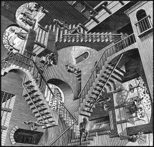

<?xml version="1.0" encoding="UTF-8"?>
<rss version="2.0"
	xmlns:content="http://purl.org/rss/1.0/modules/content/"
	xmlns:wfw="http://wellformedweb.org/CommentAPI/"
	xmlns:dc="http://purl.org/dc/elements/1.1/"
	xmlns:atom="http://www.w3.org/2005/Atom"
	xmlns:sy="http://purl.org/rss/1.0/modules/syndication/"
	xmlns:slash="http://purl.org/rss/1.0/modules/slash/"
	>

<channel>
	<title>The Civilization Gene &#187; Matthew Newhall</title>
	<atom:link href="http://civgene.matthewnewhall.com/archives/author/admin/feed" rel="self" type="application/rss+xml" />
	<link>http://civgene.matthewnewhall.com</link>
	<description>Civilization is the Logic of Compassion</description>
	<lastBuildDate>Sun, 26 Mar 2017 00:26:19 +0000</lastBuildDate>
	<language>en-US</language>
	<sy:updatePeriod>hourly</sy:updatePeriod>
	<sy:updateFrequency>1</sy:updateFrequency>
	<generator>http://wordpress.org/?v=3.6.1</generator>
		<item>
		<title>Civgene can provide objective morality</title>
		<link>http://civgene.matthewnewhall.com/archives/1429</link>
		<comments>http://civgene.matthewnewhall.com/archives/1429#comments</comments>
		<pubDate>Wed, 22 Mar 2017 03:48:51 +0000</pubDate>
		<dc:creator>Matthew Newhall</dc:creator>
				<category><![CDATA[ASPD]]></category>
		<category><![CDATA[civilization gene]]></category>
		<category><![CDATA[collapse]]></category>
		<category><![CDATA[compound emotions]]></category>
		<category><![CDATA[conscience]]></category>
		<category><![CDATA[cult]]></category>
		<category><![CDATA[defense against a psychopath]]></category>
		<category><![CDATA[defense against psychopaths]]></category>
		<category><![CDATA[Distribution Party]]></category>
		<category><![CDATA[EMPATHS]]></category>
		<category><![CDATA[faith]]></category>
		<category><![CDATA[genetics]]></category>
		<category><![CDATA[imagination]]></category>
		<category><![CDATA[legal complexity]]></category>
		<category><![CDATA[logic]]></category>
		<category><![CDATA[metamind]]></category>
		<category><![CDATA[MRI]]></category>
		<category><![CDATA[multiple personality disorder]]></category>
		<category><![CDATA[narcissist]]></category>
		<category><![CDATA[PSYCHOLOGY]]></category>
		<category><![CDATA[PSYCHOPATHS]]></category>
		<category><![CDATA[reason]]></category>
		<category><![CDATA[religion]]></category>
		<category><![CDATA[science]]></category>
		<category><![CDATA[SOCIETY]]></category>
		<category><![CDATA[sociopath]]></category>
		<category><![CDATA[study]]></category>
		<category><![CDATA[subconscious]]></category>
		<category><![CDATA[trust]]></category>
		<category><![CDATA[Type One Civilization]]></category>
		<category><![CDATA[wants abilities limits]]></category>

		<guid isPermaLink="false">http://civgene.matthewnewhall.com/?p=1429</guid>
		<description><![CDATA[&#160; &#160; Video explaining how you can derive objective morality from civgene. You can use behaviours unique to empaths to derive objective morality from science itself.  Non-psychopathic behaviours are like atoms which in turn can be used to build rights, much like molecules. More to come. Edit 3/25:  Updated video.  Clearer and more concise edits [&#8230;]]]></description>
				<content:encoded><![CDATA[<p>&nbsp;</p>
<p>&nbsp;</p>
<p>Video explaining how you can derive objective morality from civgene.</p>
<p><iframe width="625" height="352" src="https://www.youtube.com/embed/GdWj5HiWTJI?feature=oembed" frameborder="0" allowfullscreen></iframe></p>
<p>You can use behaviours unique to empaths to derive objective morality from science itself.  Non-psychopathic behaviours are like atoms which in turn can be used to build rights, much like molecules.</p>
<p>More to come.</p>
<p>Edit 3/25:  Updated video.  Clearer and more concise edits with clips.</p>
]]></content:encoded>
			<wfw:commentRss>http://civgene.matthewnewhall.com/archives/1429/feed</wfw:commentRss>
		<slash:comments>0</slash:comments>
		</item>
		<item>
		<title>RAD confirms civgene amnesia prototyping</title>
		<link>http://civgene.matthewnewhall.com/archives/1421</link>
		<comments>http://civgene.matthewnewhall.com/archives/1421#comments</comments>
		<pubDate>Thu, 23 Feb 2017 19:46:55 +0000</pubDate>
		<dc:creator>Matthew Newhall</dc:creator>
				<category><![CDATA[childhood]]></category>
		<category><![CDATA[childhood amnesia]]></category>
		<category><![CDATA[civilization gene]]></category>
		<category><![CDATA[compound emotions]]></category>
		<category><![CDATA[conscience]]></category>
		<category><![CDATA[EMPATHS]]></category>
		<category><![CDATA[genetics]]></category>
		<category><![CDATA[metamind]]></category>
		<category><![CDATA[proto-psychopaths]]></category>
		<category><![CDATA[prototyping]]></category>
		<category><![CDATA[PSYCHOLOGY]]></category>
		<category><![CDATA[PSYCHOPATHS]]></category>
		<category><![CDATA[Reactive Attachment Disorder]]></category>
		<category><![CDATA[science]]></category>
		<category><![CDATA[study]]></category>
		<category><![CDATA[subconscious]]></category>

		<guid isPermaLink="false">http://civgene.matthewnewhall.com/?p=1421</guid>
		<description><![CDATA[RAD or Reactive Attachment Disorder fits the civgene Amnesia Prototyping model perfectly. &#8220;defined as a condition where an individual has difficulty forming lasting relationships and lacks the ability to be genuinely affectionate toward others.  In addition, persons with RAD do not learn to trust others and do not appear to develop a conscience.&#8221; What creates [&#8230;]]]></description>
				<content:encoded><![CDATA[<p><a href="../../../wp-content/uploads/2017/02/alone.jpg"></a></p>
<p>RAD or Reactive Attachment Disorder fits the civgene <a href="http://civgene.matthewnewhall.com/archives/category/empaths/metamind/prototyping/index.php.html">Amnesia Prototyping</a> model perfectly.</p>
<p>&#8220;defined as a condition where an individual has difficulty forming lasting relationships and lacks the ability to be genuinely affectionate toward others.  In addition, persons with RAD do not learn to trust others and do not appear to develop a conscience.&#8221;</p>
<p>What creates the conditions for RAD?</p>
<p>&#8220;This is believed to be caused by abuse or separation (physical or emotional) from one’s primary caregiver during the first three years of life&#8221;</p>
<p>The metamind model explains what is happening.  The non-psychopath&#8217;s brain is in a different mode at this age.  Instead of forming memories the metamind is forming <span style="text-decoration: underline;">types</span> of memories or prototypes.  If a child is forced into risk assessment for survival (severe abuse) or has no emotional input whatsoever (Daniel Solomon ignored in an orphanage), prototypes are never created, and the metamind (the conscience/subconscious) can&#8217;t compare unlike things.  The metamind is a risk engine fed by emotional metadata.  With no data to output, no risk is modeled, and no conscience is displayed.</p>
<p>Of course the solution has already been found.  Attachment therapy.  What&#8217;s new is Civgene&#8217;s contribution to why it works.  A sufficient number of prototypes need to be formed so emotional structures can be attached to all memories, realizing the full biological EQ (and ultimately IQ) and forming a complete metamind.  The therapy works because such an extreme trust is formed (in the absence of risk) that during the therapy.  Hopefully in stretches of time that are long as possible. The key is no real consequences for the subjects actions, hence the conscience sends no risk signals.  In that environment the metamind may change modes to prototyping.  In that case it can write new emotional memories as prototypes doing the work that couldn&#8217;t occur at a young age.  Writing the prototypes that would have naturally formed in between 2 and 8 years old.</p>
<p>The bad news here is, there has been much false hope for curing actual psychopaths.  RAD victims may act like young psychopaths, but are not, nor ever will be psychopaths.  They are reverting to the pre-civilization gene jealousy conscience (acting like a psychopath.)  They have a metamind, but it never fully formed do to a lack of nurturing programming from guardians.</p>
<p>RAD untreated is a preventable, predictable, possibly lifelong, perpetuation of the first state of the metamind for humans born with one.  The states are undeveloped(including RAD), suppressed(transitory), metapsychopathy, and protopsychopathy.</p>
<p>References:</p>
<p><a href="http://blog.asha.org/2013/07/11/kid-confidential-what-reactive-attachment-disorder-looks-like/">http://blog.asha.org/2013/07/11/kid-confidential-what-reactive-attachment-disorder-looks-like/</a></p>
<p><a href="https://www.thisamericanlife.org/radio-archives/episode/317/transcript">https://www.thisamericanlife.org/radio-archives/episode/317/transcript</a></p>
]]></content:encoded>
			<wfw:commentRss>http://civgene.matthewnewhall.com/archives/1421/feed</wfw:commentRss>
		<slash:comments>0</slash:comments>
		</item>
		<item>
		<title>The cult test</title>
		<link>http://civgene.matthewnewhall.com/archives/1410</link>
		<comments>http://civgene.matthewnewhall.com/archives/1410#comments</comments>
		<pubDate>Tue, 07 Feb 2017 04:15:11 +0000</pubDate>
		<dc:creator>Matthew Newhall</dc:creator>
				<category><![CDATA[cult]]></category>
		<category><![CDATA[currency]]></category>
		<category><![CDATA[economy of scale]]></category>
		<category><![CDATA[EMPATHS]]></category>
		<category><![CDATA[faith]]></category>
		<category><![CDATA[hierarchy]]></category>
		<category><![CDATA[investment]]></category>
		<category><![CDATA[logic]]></category>
		<category><![CDATA[metamind]]></category>
		<category><![CDATA[rationalization]]></category>
		<category><![CDATA[reason]]></category>
		<category><![CDATA[SOCIETY]]></category>
		<category><![CDATA[specialization]]></category>
		<category><![CDATA[the right to fork]]></category>

		<guid isPermaLink="false">http://civgene.matthewnewhall.com/?p=1410</guid>
		<description><![CDATA[In a previous civgene, I presented a series of axioms that led to the cult test.   Most societies operate at least partly on faith.  Stating assumed truths that individuals can not plausibly test with vigor.  The cult test presents three conditions that if a fundamentalist religious or political faith infringes on outsiders freedom, it has [&#8230;]]]></description>
				<content:encoded><![CDATA[<p><a href="../../../wp-content/uploads/2017/02/cups3.jpg"></a></p>
<p>In a <a title="Religion and Democracy" href="http://civgene.matthewnewhall.com/index.html%3Fp=1243.html">previous civgene</a>, I presented a series of axioms that led to the cult test.   Most societies operate at least partly on faith.  Stating assumed truths that individuals can not plausibly test with vigor.  The cult test presents three conditions that if a fundamentalist religious or political faith infringes on outsiders freedom, it has slipped into cult.</p>
<p><strong>The cult test is as follows. If any condition is met, it&#8217;s a cult.</strong><br />
1.<strong> Denial of exit</strong>.<br />
2. <strong>Aggression toward outsider speech.</strong><br />
3. <strong>Refusal to commit to peace with outsiders.</strong></p>
<p>Freedom is a <a title="Nature is cruel, and it costs her." href="http://civgene.matthewnewhall.com/index.html%3Fp=745.html">core human behavior (differs from animals)</a> because it&#8217;s how humans allow each other space to make the most of their emotional metadata, usually forming faiths.  <strong>A faith being knowing something you can&#8217;t prove.</strong>  An emotional output from the <a href="../../../papers/Metamind.html">metamind (the conscience/subconscious)</a>, a passively driven risk engine connecting unlike things based on emotional similarity.  A probability engine.  <strong>Effectively rationalizing a faith can take a second or longer than lifetime.  Hence the utility for an indeterminate time to make your own decisions, better known as freedom.</strong></p>
<p>Faith alone is not the goal but the means to achieve the goal of all life, autonomy.  Cult occurs when faith becomes an end not the means. Everyone’s set of faiths must inherently be different (aside from biological differences) because the metadata connected to their memories and their experiences are different.  As experiences deviate so will faiths.  Denying this process for an individual is detrimental to the common benefit of human society.</p>
<p><strong>Some faiths will occur in common so expression and organization of common ideas is beneficial.  Rationalization can be rigorous so invention, specialization, and currency operate like in other economies</strong>.  But also like other economies stagnation can occur if psychopathic or animal kingdom work-a-likes are substituted for effective intelligence, and progress stagnates.  Damaging and even completely crushing autonomy.</p>
<p>All three conditions of the cult test are designed to protect the natural functionality of the empathic mind without interfering in opportunities of economies of scale (rapid rationalization.)  Just like all logical constructs, logical constructs about natural forming but yet unproven probabilities can have advantages for all people.  <strong>The conditions of the cult test together form to protect the fundamental human right, the right to fork.  The right of human beings to pursue their biological advantage of rapid risk assessment without human created hierarchical blockage</strong>.  Faith is what gives human beings their complete intelligence, and also is what is cited by those who try to <a title="Type One Civilization" href="http://civgene.matthewnewhall.com/index.html%3Fp=259.html">dismember that intelligence for personal gain though hierarchy</a>.</p>
<p>The key to retaining our freedom is the ability to distance yourself from destructive hierarchies while embracing constructive ones.  The cult test ensures that right by disallowing the combination of pure faith as a potentially manipulated or even completely fabricated external process, from the ability to enforce your adherence to an external faith structure.  <strong>The cult test protects the rapid rationalizer seeking community from slavery, by separating physical and mental force from faith and it&#8217;s beneficial ideas.</strong></p>
<p>I present these additional axioms to permanently disconnect the relationship of force and faith.</p>
<ul>
<li>Faith is subconscious realization (emotional metadata).</li>
<li><a title="Reason vs Logic" href="http://civgene.matthewnewhall.com/index.html%3Fp=578.html">Reason</a> is rational thought combined with faith.</li>
<li>Faith can occur without reason.</li>
<li>Force is only moral in the face of clear and present danger.</li>
<li>Determining clear danger can include faith.</li>
<li>Determining present danger must include literal observation and therefore rational thought.</li>
<li>Clear and present danger can be determined either by reason or rational thought alone.</li>
<li><strong>Force justified by faith alone is a farce.</strong></li>
</ul>
<p>&nbsp;</p>
]]></content:encoded>
			<wfw:commentRss>http://civgene.matthewnewhall.com/archives/1410/feed</wfw:commentRss>
		<slash:comments>0</slash:comments>
		</item>
		<item>
		<title>Terminology error &#8211; misuse of &#8216;recessive&#8217;</title>
		<link>http://civgene.matthewnewhall.com/archives/1400</link>
		<comments>http://civgene.matthewnewhall.com/archives/1400#comments</comments>
		<pubDate>Mon, 06 Feb 2017 06:20:33 +0000</pubDate>
		<dc:creator>Matthew Newhall</dc:creator>
				<category><![CDATA[civilization gene]]></category>
		<category><![CDATA[genetics]]></category>
		<category><![CDATA[HELPING OUT]]></category>
		<category><![CDATA[PSYCHOPATHS]]></category>
		<category><![CDATA[science]]></category>
		<category><![CDATA[SOCIETY]]></category>
		<category><![CDATA[website]]></category>

		<guid isPermaLink="false">http://civgene.matthewnewhall.com/?p=1400</guid>
		<description><![CDATA[An error has become apparent throughout the civgene site and papers.  I have been incorrectly using the term recessive.  This stems from my high school level biological science background.  The mistake specifically was thinking that there were only two basic building blocks of genetic combinatorics.  A gross miscalculation. In my defense I had no idea I [&#8230;]]]></description>
				<content:encoded><![CDATA[<p><a href="../../../wp-content/uploads/2017/02/confusion.jpg"></a></p>
<p>An error has become apparent throughout the civgene site and papers.  I have been incorrectly using the term recessive.  This stems from my high school level biological science <a title="Civgene, why now?" href="http://civgene.matthewnewhall.com/index.html%3Fp=723.html">background</a>.  The mistake specifically was thinking that there were only two basic building blocks of genetic combinatorics.  A gross miscalculation.</p>
<p>In my defense I had no idea I would ever envision or peruse anything like civgene.  My rudimentary <a href="https://en.wikipedia.org/wiki/Gregor_Mendel">Mendelian</a> generic understanding caused me to infer that any gene that was not dominant must be recessive. I was at the least, dated.  In fact had I been aware of the many types(and still growing) of genetic inheritance I would never have said it.  It is possible psychopathy is a combination of several genes and/or could be autosomal recessive, Autosomal dominant, (probably not X or Y linked) or a number of not commonly named patterns.  I just don&#8217;t know, but will pursue this knowledge.</p>
<p>My error was in not saying what I really meant, &#8216;Not Mendelian dominant.&#8217; or &#8216;Not dominant&#8217;  This assertion is based on solid external science.  Psychopaths are officially considered to not be not curable.  This was the original tell for me that it is likely genetic.  Cases are distributed evenly between males and females.  Further, symptoms seem to begin from a very young age, one or two years old as childhood amnesia ends sooner, making postnatal epigenetics less likely.  Psychopaths can appear in families with no apparent history, but there does seem to be a higher likelihood of psychopaths being born to one or more psychopath parents.</p>
<p>I caught this error after some vague advice about misusing &#8216;recessive&#8217; prompted me to look into the combinatorics of a civgene. I could not line up some estimates of psychopath growth with the numeracy of recessive genes.  During this process I learned that combinatorics vary wildly along with inheritance patterns.  Many alleles be part of a single gene or that genes with a single function can include large swaths of DNA.  Using combinatorics to prove genetic inheritance types without first knowing the genes involved can be difficult or impossible.  Lesson learned.</p>
<p>If you are a geneticist, you probably already realize this error does not effect the viability of civgene.  My thinking was correct even if my label was incorrect.  I apologise for any part in delaying recognition or visibility of civgene with this error.</p>
<p>The question remains of remediation.  Since the meaning was consistent, I can simply replace the word.  I have found 1 papers and 5 blog posts with the error.  I will correct &#8216;recessive&#8217; with &#8216;not dominant&#8217; ASAP and post the corrected links here as I find them.</p>
<ul>
<li><a href="../../../papers/Final_Fronteer.html">http://civgene.matthewnewhall.com/papers/Final_Fronteer.html</a></li>
<li><a href="http://civgene.matthewnewhall.com/index.html%3Fp=52.html">http://civgene.matthewnewhall.com/archives/52</a></li>
<li><a href="http://civgene.matthewnewhall.com/index.html%3Fp=188.html">http://civgene.matthewnewhall.com/archives/188</a></li>
<li><a href="http://civgene.matthewnewhall.com/index.html%3Fp=896.html">http://civgene.matthewnewhall.com/archives/896</a></li>
<li><a href="http://civgene.matthewnewhall.com/index.html%3Fp=896.html">http://civgene.matthewnewhall.com/archives/1013</a></li>
<li><a href="http://civgene.matthewnewhall.com/theories.1.html">http://civgene.matthewnewhall.com/theories</a></li>
</ul>
<p>Please if you find this to be further in error, please contact me with corrections ASAP.  Also if you find recessive in use, please contact me.  Thanks for you assistance.</p>
]]></content:encoded>
			<wfw:commentRss>http://civgene.matthewnewhall.com/archives/1400/feed</wfw:commentRss>
		<slash:comments>0</slash:comments>
		</item>
		<item>
		<title>Economic collapse can create unborn schizophrenia</title>
		<link>http://civgene.matthewnewhall.com/archives/1395</link>
		<comments>http://civgene.matthewnewhall.com/archives/1395#comments</comments>
		<pubDate>Fri, 27 Jan 2017 15:54:17 +0000</pubDate>
		<dc:creator>Matthew Newhall</dc:creator>
				<category><![CDATA[civilization gene]]></category>
		<category><![CDATA[collapse]]></category>
		<category><![CDATA[defense against psychopaths]]></category>
		<category><![CDATA[economics]]></category>
		<category><![CDATA[economy of scale]]></category>
		<category><![CDATA[genetics]]></category>
		<category><![CDATA[PSYCHOLOGY]]></category>
		<category><![CDATA[PSYCHOPATHS]]></category>
		<category><![CDATA[schizophrenia]]></category>
		<category><![CDATA[science]]></category>
		<category><![CDATA[SOCIETY]]></category>
		<category><![CDATA[study]]></category>

		<guid isPermaLink="false">http://civgene.matthewnewhall.com/?p=1395</guid>
		<description><![CDATA[&#8220;Likewise, adults that were prenatally exposed to famine conditions have also been reported to have significantly higher incidence of schizophrenia.&#8221; Looks like support for another civgene theory. That schizophrenia is genetic resistance to manipulation by psychopaths. In this case epigeneticly triggered by starvation of an unborn&#8217;s mother.  Starvation, has a strong likelyhood it&#8217;s been caused [&#8230;]]]></description>
				<content:encoded><![CDATA[<p><a href="../../../wp-content/uploads/2017/01/wheat.jpg"></a></p>
<p>&#8220;Likewise, adults that were prenatally exposed to famine conditions have also been reported to have significantly higher incidence of schizophrenia.&#8221;</p>
<p>Looks like support for another civgene theory. <a title="Is conspiracy theory useful?" href="http://civgene.matthewnewhall.com/index.html%3Fp=1297.html">That schizophrenia is genetic resistance to manipulation by psychopaths.</a> In this case epigeneticly triggered by starvation of an unborn&#8217;s mother.  Starvation, has a strong likelyhood it&#8217;s been caused by a collapsing economy.  Civgene predicts <a href="../../../papers/Psychopaths-ancient-breed.html">economic collapses are because the percentage of psychopaths in the economy has grown too large.</a></p>
<p><a href="http://www.whatisepigenetics.com/fundamentals/">http://www.whatisepigenetics.com/fundamentals/</a></p>
<p>citations from link.</p>
<ol>
<li id="fn-12-8"><em>St Clair D., Xu M., Wang P., Yu Y., Fang Y., Zhang F., Zheng X., Gu N., Feng G., Sham P., and He L. Rates of Adult  Schizophrenia Following Prenatal Exposure to the Chinese Famine of 1959-1961.JAMA 294(5):557-562 (2005).</em></li>
<li id="fn-12-9"><em>van Os J, Selten JP. Prenatal exposure to maternal stress and subsequent schizophrenia. The May 1940 invasion of The Netherlands. Br J Psychiatry 172:324-6 (1998).</em></li>
</ol>
<p>Interesting implications for supernatural faiths with fasting rituals. Are they systemically creating more schizophrenics?  How about dieting?  Is it statistically significant?</p>
]]></content:encoded>
			<wfw:commentRss>http://civgene.matthewnewhall.com/archives/1395/feed</wfw:commentRss>
		<slash:comments>0</slash:comments>
		</item>
		<item>
		<title>Civgene: Why multitasking lowers IQ/EQ</title>
		<link>http://civgene.matthewnewhall.com/archives/1387</link>
		<comments>http://civgene.matthewnewhall.com/archives/1387#comments</comments>
		<pubDate>Thu, 19 Jan 2017 20:06:40 +0000</pubDate>
		<dc:creator>Matthew Newhall</dc:creator>
				<category><![CDATA[compound emotions]]></category>
		<category><![CDATA[conscience]]></category>
		<category><![CDATA[EMPATHS]]></category>
		<category><![CDATA[gaslighting]]></category>
		<category><![CDATA[know yourself]]></category>
		<category><![CDATA[logic]]></category>
		<category><![CDATA[metamind]]></category>
		<category><![CDATA[MRI]]></category>
		<category><![CDATA[propaganda]]></category>
		<category><![CDATA[PSYCHOLOGY]]></category>
		<category><![CDATA[PSYCHOPATHS]]></category>
		<category><![CDATA[rationalization]]></category>
		<category><![CDATA[reason]]></category>
		<category><![CDATA[science]]></category>
		<category><![CDATA[study]]></category>
		<category><![CDATA[subconscious]]></category>

		<guid isPermaLink="false">http://civgene.matthewnewhall.com/?p=1387</guid>
		<description><![CDATA[Interesting brain study. http://www.cnbc.com/2017/01/12/why-smart-people-dont-multitask.html This seemed tangential to civgene until i read this part. &#8220;Talentsmart has tested more than a million people and found that 90% of top performers have high EQs. If multitasking does indeed damage the anterior cingulate cortex (a key brain region for EQ) as current research suggests, doing so will lower [&#8230;]]]></description>
				<content:encoded><![CDATA[<p><a href="../../../wp-content/uploads/2017/01/chair.gif"></a></p>
<p>Interesting brain study.</p>
<p><a href="http://www.cnbc.com/2017/01/12/why-smart-people-dont-multitask.html">http://www.cnbc.com/2017/01/12/why-smart-people-dont-multitask.html</a></p>
<p>This seemed tangential to civgene until i read this part.</p>
<p>&#8220;Talentsmart has tested more than a million people and found that 90% of top performers have high EQs. If multitasking does indeed damage the anterior cingulate cortex (a key brain region for EQ) as current research suggests, doing so will lower your EQ while it alienates your coworkers.&#8221;</p>
<p>There is a simple explanation for this in the metamind model of the conscience/subconcious.  Rationalization, the process of logically assessing our subconscious emotional risk signals, is interrupted, or worse conflated with other signals (the core tool of propaganda and gaslighting).  Many people (rightly) feel uncomfortable following un-rationalized intuition, so they ignore it.  Becoming no better than a psychopath at assessing the immediate and current risks.</p>
<p>Further if lower effective intelligence results from frequent interruptions this strongly supports the idea that human intelligence is more than just a strong memory and fast logic processing.  Very specifically it indicates that some part of subconscious thought management process(civgene says the metamind) is not only part of intelligence, but makes sense if it has it&#8217;s OWN memory structure(civgene indicates this is emotional metadata).</p>
<p><span style="text-decoration: underline;">The metamind model could have predicted the outcome of this study.</span>  It explains it succinctly.  Always a good sign.<strong></strong></p>
<p><strong>Prediction</strong>:  If this study is replicated and the metamind is accepted as the explanation, then <strong>some time in</strong> <strong>topical psychotherapy (talk therapy) should be able to restore previously tested IQ and EQ scores.</strong>  The damage isn&#8217;t permanent.</p>
]]></content:encoded>
			<wfw:commentRss>http://civgene.matthewnewhall.com/archives/1387/feed</wfw:commentRss>
		<slash:comments>0</slash:comments>
		</item>
		<item>
		<title>The risks of atheism</title>
		<link>http://civgene.matthewnewhall.com/archives/1375</link>
		<comments>http://civgene.matthewnewhall.com/archives/1375#comments</comments>
		<pubDate>Thu, 05 Jan 2017 16:45:20 +0000</pubDate>
		<dc:creator>Matthew Newhall</dc:creator>
				<category><![CDATA[cult]]></category>
		<category><![CDATA[defense against psychopaths]]></category>
		<category><![CDATA[economics]]></category>
		<category><![CDATA[economy of scale]]></category>
		<category><![CDATA[EMPATHS]]></category>
		<category><![CDATA[faith]]></category>
		<category><![CDATA[imagination]]></category>
		<category><![CDATA[know yourself]]></category>
		<category><![CDATA[rationalization]]></category>
		<category><![CDATA[trust]]></category>

		<guid isPermaLink="false">http://civgene.matthewnewhall.com/?p=1375</guid>
		<description><![CDATA[Faith is rationalized but unproven subconscious knowledge.  The source of creativity. I aim for, and have not yet been challenged on, philosophical coherency between types of faith.  All new philosophy, like all new creative works, starts briefly as faith.  I take care to rationalize all my faiths both from atheist and non-atheist perspectives.  Resolving to [&#8230;]]]></description>
				<content:encoded><![CDATA[<p><a href="../../../wp-content/uploads/2017/01/prop.jpg"></a></p>
<p><strong>Faith is rationalized but unproven subconscious knowledge.  The source of creativity.</strong></p>
<p>I aim for, and have not yet been challenged on, philosophical coherency between types of faith.  All new philosophy, like all new creative works, starts briefly as faith.  I take care to rationalize all my faiths both from atheist and non-atheist perspectives.  Resolving to the most likely explanations of either and rationalizing the other to work around the first.</p>
<p>This has been completely successful.  Despite some predictions to the contrary by atheism advocates has not resulted in sudden and steadfast atheism.  Sure it could, but it seems to me that would be lazy.  A choice to throw some data away.  A poor practice with poor results.</p>
<p>The key for me has been the civgene theory, and it&#8217;s implications for the conscience as a risk engine overlayed over the more typical spectrum of animal behavior.  Humans (except psychopaths) are of two minds, the subconscious and the rational.  Both minds can only communicate with each other in a vague spectrum of feelings.</p>
<p><strong>What does throwing data away really mean? </strong></p>
<p>For supernatural faiths that an entire society had a useless premise from the start.  This is not coherent with civgene or observable behavior.  Supernatural faiths are only successful if the contain truths.  Truth, the engine of progress, is the common goal of society.</p>
<p>For potentially provable faiths it means assuming all outlying data points are error.  That all aspects of observation are perfectly accurate and innate.  This makes huge assumptions about quality of data, accuracy and relevance of test parameters, the infinite nature (large or small) of at least some related numbers, and that all related scopes are holistic.  Noble but lofty goals, that function best when small in focus.</p>
<p><strong>Implications</strong></p>
<p><span style="text-decoration: underline;">Supernatural faith has understood risks.  It creates a risk of cult.</span>  Reasonable people know this and it has been discussed at length by the objective philosopher.  Supernatural faith inevitably results in religions as people seek it&#8217;s truths and compare rationalizations.  Comparisons can give way to programming.  Programming can be then turned against human rights, and a cult results.</p>
<p><span style="text-decoration: underline;">Strictly political cult is possible too, as twentieth century communism laid bare.</span>  Avoiding supernatural faith does not protect you from cult.  How is that possible?  Partly because humans change their behavior when they are studied.  Their behavior is the result of their subconscious risk assessment, and they react to the new risk, abuses of the study. (knowledge is power) <strong>The only way to make people predictable is to disable their conscience by completely reprogramming it.  A simple task against the atheist through distorted or fabricated data.</strong>  A political cult is formed, again crushing human rights (and new economies of scale).</p>
<p>The risks of supernatural cult are transferred to the risk of being programmed by political cult.  Why?  Supernatural faiths definite immutable moralities (right or wrong), atheist morality becomes subjective.  In organized society custody of data can be controlled by would be abusers.  Bad conclusions can form from bad data.  Authoritative secular control of data is rife with golden opportunity (for abuse).  Garbage in, garbage out.  Since data makes morality, subjective morality is only as objective as integrity of it&#8217;s data.  Not only is data integrity both very shaky and in motion, but cohesive patterns are elusive and often contradicted by the periphery.  <strong>Human beings are absurdly trusting.  Expecting other people to share their goals and means, when history is dominated by human trust betrayed.</strong></p>
<p>Atheists are no different than non-atheists in waiting for faith to become fact.  A person can only propose a theory, and work toward realization of fact.  The atheist boasts their process of achieving fact is under their control, but it&#8217;s not.  Peer review only provides independent verification of an already confirmed fact.  It doesn&#8217;t make fact in a moment, it approaches consensus over time as growing scope is incorporated.  Supernatural faith is an exercise in pure patience, even after a successful realization. Control for the sake of itself is let go.  Exactly the virtue the atheist needs, to improve the quality and inclusiveness of their data, to protect against the panicked rush to conclusion encouraged by political cult.  <strong>The theorist of the provable, needs to resist pressure to rush to fact, exactly what &#8216;irrational&#8217; objective morality offers.</strong></p>
<p>The risk for atheists is the desperate scramble to improve humanities future.  The perpetual lust for tiny incremental hope, temporarily, when the process of fact provides none.  When endurance, patience and temperance are needed for the very scientific goal of quality of data.  <strong>Simply put, people want hope and react badly in it&#8217;s absence.  An inevitable state for an atheist pursuing pure science to it&#8217;s natural ends.</strong>  Most supernatural faith offers peace without explanation.  It seems to me as complex as it is, creating a state of philosophical coherency consisting of both supernatural and non supernatural faith is the simplest path forward.  Enjoying and utilizing the full human condition, rather than denying it.  Ultimately protecting humanity from further political cults.</p>
<p><strong>Epilogue</strong></p>
<p>Feedback has been <em>interesting</em>.  I stand by everything I have said, but I want to clarify for <em>our</em> society.  Full time atheism is neither superior nor inferior to individuals who can operate both with provable faiths and supernatural faiths.  They both have virtues.  <strong>The fantasy is the necessity of Antitheism, a freedom crushing edict designed to send the masses morally adrift.  <span style="text-decoration: underline;">Separating rights crushing cult from religion is <a href="http://civgene.matthewnewhall.com/index.html%3Fp=1243.html">SO TRIVIAL</a> I can only conclude the lack will to do it is malicious.</span></strong>  <span style="text-decoration: underline;">Antitheism is an excuse.</span></p>
<p>I would expect a sceptical scientist with high EQ, a 160 IQ and self directed understanding of social history to excel at identifying objective morality, making them as durable against any cult as their dual faithed counterpart.  They could both still be vulnerable to political cult, but they&#8217;ve got the tools to beat it.   In our society, our best cases are being emulated poorly.  &#8216;Science&#8217; is a branding exercise often used specifically to discourage questioning.  &#8216;Authority&#8217; substituting for diligence and thought.  An abomination of the scientific method.</p>
<p>Political cult is here <strong>now</strong>, and it is growing.  Killing that absurdity means selecting peers by ability, not permission.  That in turn means building a scientific community of open access to source data (like journals.)  Simply choosing atheism as the only needed step toward objectivity and ability is ridiculous, and dangerous.  <strong>As one common example, supernatural faith organizations aren&#8217;t keeping important scientific papers behind a paywall, limiting participants.  Lack of objective morality is.</strong></p>
<p>Edit 1/6: Major clarity improvements, please reread.</p>
<p>Edit 1/8: Added epilogue.</p>
]]></content:encoded>
			<wfw:commentRss>http://civgene.matthewnewhall.com/archives/1375/feed</wfw:commentRss>
		<slash:comments>0</slash:comments>
		</item>
		<item>
		<title>The end of all republics</title>
		<link>http://civgene.matthewnewhall.com/archives/1359</link>
		<comments>http://civgene.matthewnewhall.com/archives/1359#comments</comments>
		<pubDate>Tue, 13 Dec 2016 05:06:57 +0000</pubDate>
		<dc:creator>Matthew Newhall</dc:creator>
				<category><![CDATA[computer science]]></category>
		<category><![CDATA[currency]]></category>
		<category><![CDATA[defense against a psychopath]]></category>
		<category><![CDATA[defense against psychopaths]]></category>
		<category><![CDATA[democracy]]></category>
		<category><![CDATA[EMPATHS]]></category>
		<category><![CDATA[GOVERNMENT]]></category>
		<category><![CDATA[Law Enforcement]]></category>
		<category><![CDATA[Legal Distribution]]></category>
		<category><![CDATA[monarchy]]></category>
		<category><![CDATA[natural law]]></category>
		<category><![CDATA[proto-psychopaths]]></category>
		<category><![CDATA[PSYCHOPATHS]]></category>
		<category><![CDATA[republic]]></category>
		<category><![CDATA[science]]></category>
		<category><![CDATA[SOCIETY]]></category>
		<category><![CDATA[spies]]></category>
		<category><![CDATA[Type One Civilization]]></category>

		<guid isPermaLink="false">http://civgene.matthewnewhall.com/?p=1359</guid>
		<description><![CDATA[The words are hard to find when discussing the chaos in the 2016 presidential election in the psychopath trap known as the United States government.  People, even both parties subconsciously captive proto-psychopaths, realize that something huge has happened, even if they can&#8217;t determine what.  I think I&#8217;ve sorted it out. I noticed that cyber-security specialists, [&#8230;]]]></description>
				<content:encoded><![CDATA[<p><a href="../../../wp-content/uploads/2016/12/there.jpeg"></a><a href="../../../wp-content/uploads/2016/12/gone.jpg"></a></p>
<p>The words are hard to find when discussing the chaos in the 2016 presidential election in the <a title="Is the United States government a psychopath trap?" href="http://civgene.matthewnewhall.com/index.html%3Fp=132.html" target="_blank">psychopath trap</a> known as the United States government.  People, even both parties subconsciously captive <a title="Is conspiracy theory useful?" href="http://civgene.matthewnewhall.com/index.html%3Fp=1297.html" target="_blank">proto-psychopaths</a>, realize that something huge has happened, even if they can&#8217;t determine what.  I think I&#8217;ve sorted it out.</p>
<p>I noticed that cyber-security specialists, for the moment, seem to fall almost completely on the statist point on the political compass.  People of all political affiliations group around a single point of view.  That cryptographicly signed, leaked emails, must be ignored.  A point a view that without it&#8217;s massive scope and current context would ever have been proffered by even a significant minority of them a mere six months ago.  Today It dawned on my rickety brain why.  They are fighting the leading edge of a trend that changes their career path.  Facing their own obsolescence.</p>
<p>I am not talking about the cyber security analyst at large trying to harden network structures against attack and limit damage when that fails.  I&#8217;m talking specifically about internet based evidence gatherers.  Internet cops.  Specialists of formal investigation and the resulting digital custody chains.  In one long mathematically indisputable batch of emails the ability of LEOs to have any effect, or to be effective, died.</p>
<h3>The robots are coming and they are from Wikileaks.</h3>
<p>Lets talk some math.  DKIM is a method of signing an email.  The entire thing including the header (sender, postmark and return address).   Some of the wikileaks emails are signed by Gmail with 2048 bit encryption.  Odds that the 2048 bit DKIM encryption signed emails have been altered is roughly 1 in 64 trillion.  This may just seem like a really big number to you until you realize this number represents the biggest number of any evidence chain.  The BEST case (the best tests and samples) for DNA being incorrect is 1 in 20 billion.  Usually it&#8217;s more like 1 in 10 million with more realistic samples, genetic target and affordable testing.  Forget the physical evidence point of view.  With a fatal car accident every hour in the United States (for example) there is a 1 in 300 million chance any particular physical sample is corrupted after being onboard during a fatal car crash.</p>
<p>Why does this matter?  Because the most reliable method of written evidence delivery, can now be sent from a random, anonymous, source on the Internet.  Police, even international spies, need not apply.  In addition, a corrupt government can no longer forge statistically significant contrary evidence in defense of a corrupt government.</p>
<p>The technology is now proven that it is no longer in the the interest of people to hire expensive, flawed LEOs, but instead insist that their governments just use DKIM for all digital communications.  Chain of custody included.  Cybersecurity custody professionals, perhaps subconsciously, have been protecting their own employment prospects from the <a title="Civgene presents simple effective solutions to AI" href="http://civgene.matthewnewhall.com/index.html%3Fp=1197.html" target="_blank">automation wave</a>.</p>
<h3>So when do all the republics die?</h3>
<p>If citizens had correct conceptual understanding of their own societies, that would probably NOT happen.  Unfortunately that is not the case.  Several theories about psychopaths have become part or near fact since the 1970s, coming as close as psychology ever does to hard science.   They are largely considered to be 1-3% of the population, are attracted to wealth and power, are both ruthless and incurable, and are the highest functioning mental illness.  Simply put they are attracted to corrupt opportunities of government power in the psychopath trap.  They become gridlocked in that trap as career politicians, winning small victories while calculating risks from many blackmails from their peers.  It&#8217;s dirty, and ruthless, and law is created and enforced like sausage is made.  In unappetizing fashion.</p>
<p>In a world where psychopaths are fact, if you are foolish enough to think you have a &#8216;team&#8217; in this fight, you probably have no idea how it works.</p>
<p>When countries, outsider candidates or even random citizens can introduce evidence with a better chain of custody than even the very best evidence the police for a country can produce, it throws the psychopath trap in disarray.  Despicably maintained but carefully balanced power, suddenly shifts as LEOs suddenly pull cornerstones from their mooring.  This, sometimes, is why they protest enforcing the law.  Like pulling a rotten tooth from the mouth, it&#8217;s a grotesque and unnerving, if necessary job.</p>
<p>It is entirely possible that a political and psychopathic union may form during lulls in evidentiary activity.  If enough time passes without a leak or a whistleblower, they may temporarily stabilize key support and convert the republic into some variation of dictatorship.  This is where enlightened countries may be entirely lost to tyranny.  This is where stupid psychopaths below the top rung do anything to save their own skin.  There is justice among the horror as it won&#8217;t work for most.</p>
<p>Now that this technology exists (it need never be &#8216;approved&#8217; to be effective) and the purge has begun, it is in the interest of insiders, even the dirtiest psychopaths, to both flee and keep the signed leaks coming.  This is the signal that the trio of psychopath choice (double down, defect and die) only has one option left, defect.  This is because dictatorships have far fewer key supporters, so most key political positions will be eliminated.  With the leading indications of their internal enforcement methods coming to light, it&#8217;s clear that many if not all key supporters will be hunted and/or executed if they do not qualify for the short list of required keys.  Psychopaths don&#8217;t do self sacrifice.  He who panics first, panics best.  A person with an uncaptured built in risk engine (the conscience) would know that.  The smartest psychopaths should keep council with them.</p>
<p>Republics that proffer law and order without at least a superior custodial track for cryptographically signed communications will be known as democratic in name only.  A rapidly fading role awaits them on the global stage.</p>
<h3>The republic reborn</h3>
<p>If you are lucky enough to live in one of the republics that remains representative during this process, what will you be given?   A technocratic republic for sure.  One where hierarchy is not just casually but formally mistrusted.  Where communications from officials in office are mandated to DKIM verification.  A system where <a title="How does legal distribution work?" href="http://civgene.matthewnewhall.com/index.html%3Fp=1042.html" target="_blank">legal distribution</a> looms over the would be corrupt secret deals in all new law.  A place where voters would vote using the spoiler and gerrymandering free approval voting on a blockchain, verifiable from anywhere by private key, but who&#8217;s anonymity would be protected by both technology and law.  A system where <a title="Who is in contol?  Banking vs new technology" href="http://civgene.matthewnewhall.com/index.html%3Fp=1131.html" target="_blank">debt is allowed</a> but all currency and money is free in return.  A system where free trade could never include cessation of human rights in the trade.  A system where a <a title="Type One Civilization" href="../../../papers/Type-one.html" target="_blank">type one civilization</a> may finally be possible.</p>
<p>Until then it&#8217;s simply an ugly waiting game.  Patience, luck and work.  A slow motion mudslide pushing away establishment key supporters.  Until the first time hidden allies don&#8217;t scurry away when a stone is moved.  Blackmail interlock cascade exhaustion.  People will say, &#8216;lets see what went wrong&#8217;, but it&#8217;s already obvious.  Secret alliances plotting against the public at large.  In a word, corruption, intentionally placed in places the public can&#8217;t reach it.  Placed by people, often psychopaths and their minions, who took advantage of a system that while sceptical was not sceptical enough.</p>
]]></content:encoded>
			<wfw:commentRss>http://civgene.matthewnewhall.com/archives/1359/feed</wfw:commentRss>
		<slash:comments>1</slash:comments>
		</item>
		<item>
		<title>Primer on propaganda</title>
		<link>http://civgene.matthewnewhall.com/archives/1348</link>
		<comments>http://civgene.matthewnewhall.com/archives/1348#comments</comments>
		<pubDate>Sat, 19 Nov 2016 17:26:47 +0000</pubDate>
		<dc:creator>Matthew Newhall</dc:creator>
				<category><![CDATA[counter-culture]]></category>
		<category><![CDATA[defense against psychopaths]]></category>
		<category><![CDATA[ENTERTAINMENT]]></category>
		<category><![CDATA[know yourself]]></category>
		<category><![CDATA[metamind]]></category>
		<category><![CDATA[propaganda]]></category>
		<category><![CDATA[proto-psychopaths]]></category>
		<category><![CDATA[SOCIETY]]></category>
		<category><![CDATA[subconscious]]></category>
		<category><![CDATA[subconscious olympics]]></category>

		<guid isPermaLink="false">http://civgene.matthewnewhall.com/?p=1348</guid>
		<description><![CDATA[&#8220;Propaganda is like rain&#8230;knowing it&#8217;s wet does not keep you dry if you&#8217;re exposed to the weather.&#8221;  &#8212; taopraxis If you master spotting propaganda can you stand in the face of it?  It seems to me the answer is &#8216;a brief while.&#8217;    Like the beginning of a rain storm, understanding wet cold drops on your [&#8230;]]]></description>
				<content:encoded><![CDATA[<p><a href="../../../wp-content/uploads/2016/11/bk-bj.jpg"></a></p>
<p>&#8220;Propaganda is like rain&#8230;knowing it&#8217;s wet does not keep you dry if you&#8217;re exposed to the weather.&#8221;  &#8212; taopraxis</p>
<p>If you master spotting propaganda can you stand in the face of it?  It seems to me the answer is &#8216;a brief while.&#8217;    Like the beginning of a rain storm, understanding wet cold drops on your skin is not useful if you don&#8217;t take cover.  Soon you&#8217;ll be soaked and shivering.</p>
<p>Chris Martinson has won this year&#8217;s subconscious Olympics.  Not only for feeling the early drops, but warning other people to take cover.  Please read his excellent primer on propaganda and how it works.</p>
<p><a href="https://www.peakprosperity.com/blog/103565/were-being-played">https://www.peakprosperity.com/blog/103565/were-being-played</a></p>
<p>And once you&#8217;ve identified a media outlet as untrustworthy, please come in out of the rain.</p>
]]></content:encoded>
			<wfw:commentRss>http://civgene.matthewnewhall.com/archives/1348/feed</wfw:commentRss>
		<slash:comments>0</slash:comments>
		</item>
		<item>
		<title>What civgene isn&#8217;t &#8211; subjective morality</title>
		<link>http://civgene.matthewnewhall.com/archives/1341</link>
		<comments>http://civgene.matthewnewhall.com/archives/1341#comments</comments>
		<pubDate>Sat, 12 Nov 2016 23:02:18 +0000</pubDate>
		<dc:creator>Matthew Newhall</dc:creator>
				<category><![CDATA[civilization gene]]></category>
		<category><![CDATA[EMPATHS]]></category>
		<category><![CDATA[ENTERTAINMENT]]></category>
		<category><![CDATA[genetics]]></category>
		<category><![CDATA[GOVERNMENT]]></category>
		<category><![CDATA[HELPING OUT]]></category>
		<category><![CDATA[logic]]></category>
		<category><![CDATA[PSYCHOLOGY]]></category>
		<category><![CDATA[PSYCHOPATHS]]></category>
		<category><![CDATA[reason]]></category>
		<category><![CDATA[science]]></category>
		<category><![CDATA[shameless self promotion]]></category>
		<category><![CDATA[SOCIETY]]></category>

		<guid isPermaLink="false">http://civgene.matthewnewhall.com/?p=1341</guid>
		<description><![CDATA[&#160; Civgene is never an attempt to alter objective morality.  Instead it is meant to observe, contrast, and consider the implications that objective morality is biologically less compelling, and therefore less relevant, for psychopaths. In the ideal case (where civgene&#8217;s theories and predictions are perfectly true), it would travel no further than explaining objective morality&#8217;s [&#8230;]]]></description>
				<content:encoded><![CDATA[<p>&nbsp;</p>
<p>Civgene is <span style="text-decoration: underline;">never</span> an attempt to alter objective morality.  Instead it is meant to observe, contrast, and consider the implications that objective morality is biologically less compelling, and therefore less relevant, for psychopaths.</p>
<p>In the ideal case (where civgene&#8217;s theories and predictions are perfectly true), it would travel no further than explaining objective morality&#8217;s origin.  IMO such is true for all science.</p>
<p><iframe width="625" height="352" src="https://www.youtube.com/embed/Lgcd6jvsCFs?feature=oembed" frameborder="0" allowfullscreen></iframe></p>
]]></content:encoded>
			<wfw:commentRss>http://civgene.matthewnewhall.com/archives/1341/feed</wfw:commentRss>
		<slash:comments>0</slash:comments>
		</item>
	</channel>
</rss>
